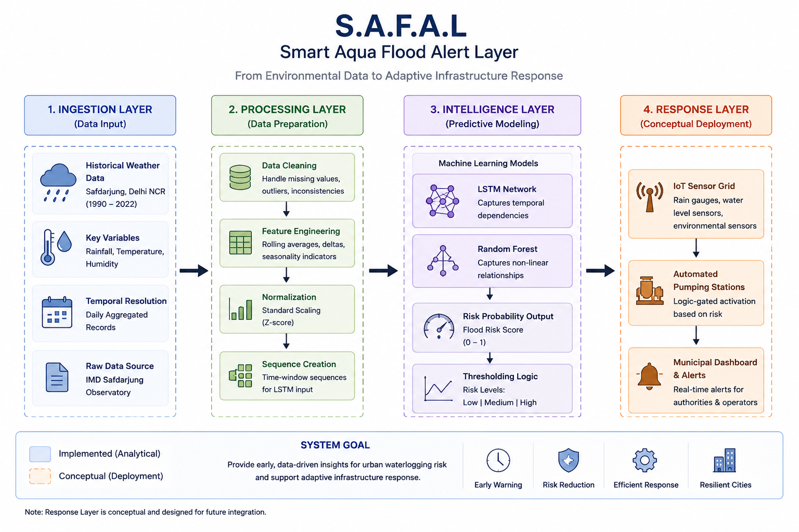
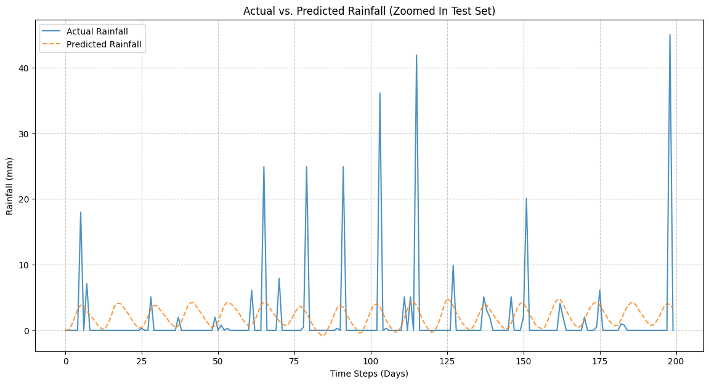
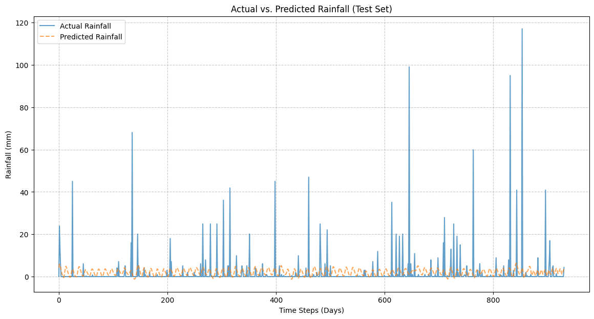
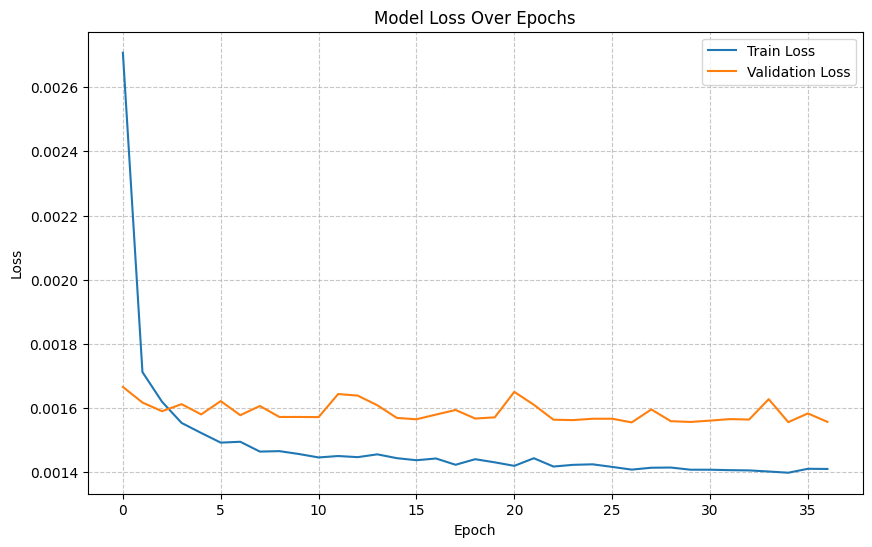

Current Prediction Risk
MODERATE
Based on 7-day soil saturation proxy
0.64
Risk Score
Pipeline Architecture

Sequential data flow: IMD Ingestion to Model Logic.
Systems Insight
The "Saturation Tipping Point" in Delhi was observed at ~150mm/week. Beyond this, response logic shifts from drainage management to automated pumping activation (Conceptual Integration).
Model Verification: Sequential vs. Actual
Validation Set

Observing the model's tracking accuracy during hydrological outliers in the test window.
Historical Trend (Safdarjung)

32-year precipitation longitudinal study identifying monsoon variability.
Model Convergence (Loss)

Weighted loss optimization indicating model stability across 50 epochs.